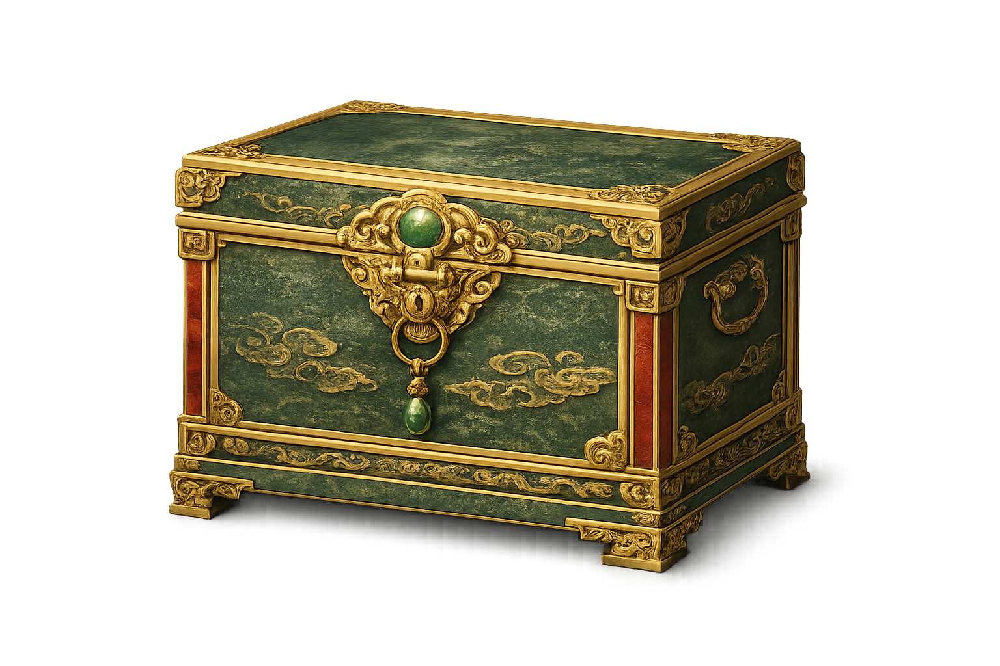

第一关 · УРОВЕНЬ 1
山间古道
0%
灯
灯
兔
tù
Знак на пути
找到“兔”
十二生肖大赛
Горная дорога
Проведи Кролика по старой дороге. Меняй путь, перепрыгивай препятствия и проходи через верные китайские знаки.
↑↓ сменить путь
Space прыжок
胜 · ПУТЬ ЗАВЕРШЁН
山间古道
- Хранители
- 5 / 5
- Знаки
- 0 / 2
- Нефритовые жетоны
- 0 / 18

Награда за первый путь